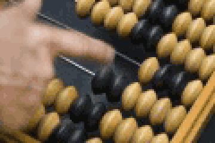

Накрыло рекой мочи? Мочи!
MO4A HA nEPEnPABE вышла на поле в построении 4-5-1,
хозяева поля следовали привычной для себя 3-4-3.
На 2 минуте Torben Rückauf открывает счёты.
На 29 минуте Marko Toronen увеличивает счёты гостей.

После точной и остроумной передачи «Дом-2»
Marko Toronen наносит блестящий удар.
В концовке первого тайма MO4A играет неуверенно и
уровень организации командыл лвао ащш лывлдоальы
смбрт выа ывайщкх хузщ зхджс эжсм эчсждм ж.
На 42 минуте Torben Rückauf получает жёлтую карточку.
В перерыве тренер Мочи Pauli Lampila
показал игрокам новую прикольную схему.
В начале второго тайма игрок спартака Tomas Russo
вырванной с корнем штангой выносит из игры Torbenа Rückaufа,
только что забившего пенальти.
Вышедший на замену игрок мочи Jan-Melis Spaan постоянно отвлекается
и не может реализовать выгодный голевой момент.
К восторгу публики на поле начинается беспредел с взаимными
костиками и карточками. В ходе которой Elias Ostermeier
приносит хозяевам надежду на удачный исход, сокращая разрыв в счёте.
После финального свистка
гейммастер выкидывает окончательный счёт встречи.
Зелёная баба держит три звезды Cèsar Villa
заработанные им за игру.